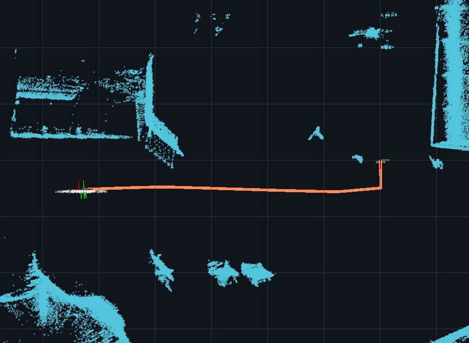

Slide 1 · speaker notesThis deck follows the five walkthrough videos. We read the ICP node of Exercise 5 line by line, and for every line we ask why it’s written that way and what would go wrong otherwise. The code is the fixed version in ros2_ws/src/icp_odom/src/icp_node.cpp. Where it differs from the team’s original, I say what the original did and why it changed. Part 1 covers how the node is built. Part 2 covers TASK 1, turning a scan into points, and TASK 2. Part 3 is TASK 3, the ICP loop. Part 4 is how ICP enters the Kalman filter, plus the results on the bag and a quiz. Part 5 shows the node live in RViz and picks up a few loose ends.
PART 1 · HOW THE NODE IS BUILT
The whole node in one picture
lidar scan
a ring of distances, 20× a second
→
scanCallback
runs for every scan
→
TASK 1 getTransform
sensor frame → robot frame
↓
Kalman filter
combines all sensors
←
TASK 3 ICP loop
how did the robot move?
←
TASK 2 initial guess
where ICP starts looking
↓
↖
robot pose
TF odom → base_footprint
odom / IMU callbacks
wheels and gyroscope
Slide 2 · speaker notesHere’s the whole node in one picture. Everything starts with a lidar scan: a ring of distance measurements, twenty times a second. For every scan, the node runs a function called scanCallback. TASK 1 converts the scan from the sensor’s frame into the robot’s frame. TASK 2 guesses how far the robot moved since the last scan. TASK 3, the ICP loop, shifts the old scan onto the new one and measures the real motion. That motion goes into a Kalman filter, which combines it with the other sensors. The filter’s result is the robot’s pose, which the node publishes on TF as odom to base_footprint. The wheels and the gyroscope feed the same filter through their own callbacks. That’s where Part 1 starts.
this->f( … ) calls a function of this node. as_bool() reads the value as true or false.
use_icp / icp_only
mode
false / false
wheels + gyro only (like Ex. 4)
true / false
filter + ICP (default)
any / true
ICP alone, no filter
WHY PARAMETERS
The launch file sets them, so you switch modes without recompiling. icp_gain sets how much the filter trusts ICP (Part 4).
Slide 3 · speaker notesThe constructor runs once, when the node starts. First it declares a parameter called icp_only with the default false, then reads its value into a member variable. In C++, the arrow on this means: call a function of this node object. Why parameters at all? The launch file can set them, so you switch modes without recompiling. Two switches give three modes. icp_only means ICP alone, without the filter. use_icp means the filter with ICP added. With both off, the filter runs on wheels and gyroscope only, like in Exercise 4, which is useful to compare against. The third parameter, icp_gain, sets how much the filter trusts ICP. Part 4 shows what it does and which value to choose.
odom_sub_ = create_subscription<Odometry>("/odom", QoS(KeepLast(10)).reliable(), bind(&odomCallback, …)); // same for imu_topic and "/ouster/scan"
C++
make_shared<X> creates an X and a pointer that frees it when nobody needs it any more.
broadcaster
publishes our result, the pose odom → base_footprint
buffer + listener
store every transform from /tf and /tf_static; TASK 1 asks this buffer
WHY NO SYNCHRONIZER
A slow sensor never holds back a fast one, and no message is thrown away. KeepLast(10) + reliable: a short delay costs no measurements.
Slide 4 · speaker notesNext come the TF objects. The broadcaster publishes our result, the robot’s pose; other programs like RViz read it from TF. In C++, make_shared creates the object and a pointer to it that cleans up after itself. The buffer and the listener belong together: the buffer stores every transform it has heard about, and the listener subscribes to /tf and /tf_static and fills it. We need them because TASK 1 asks this buffer how each sensor is mounted. Then the subscriptions. create_subscription tells ROS: call me when a message arrives on the odom topic, and the function it calls is odomCallback. std::bind packs that member function together with this object so ROS can call it. Keep last ten means up to ten messages wait if the callback is busy; reliable means none get lost. The same follows for the IMU and the lidar scan. Why not wait for all three together, like the synchronizer in Exercise 4? Because then a slow sensor holds back a fast one, and messages that don’t fit get thrown away. Possible question: why a class instead of globals? The node’s memory stays together and private, callbacks become member functions that can reach it, and it’s the usual ROS 2 style.
02 · FIX 1 · LINES 195–202, 123–129
Time, and the reset when the bag loops
double dt = (t - filter_time_).seconds(); if (dt < -kTimeJumpBack) // more than 1 s back { resetFilter(t); // origin, new time, forget last scan return; } if (dt <= 0) // a few ms older: normal return;
WHY 1 SECOND, NOT 0
Odom (50 Hz) and IMU (125 Hz) interleave, so a few ms backwards happens all the time. 1 s is far above that jitter and far below the 40 s bag.
THE ORIGINAL
Returned on dt ≤ 0 without updating its stored time. After the loop every message looked too old: the robot froze at 44.5 s.
resetFilter does three things
initialState(): back to the origin with the starting uncertainty · filter_time_ = t · have_last_scan_ = false, because a scan from the bag’s end against one from its start would look like a huge jump
Slide 5 · speaker notesEvery message carries a time stamp, the moment it was measured. The filter remembers the time of its last update and moves its state forward by the difference, dt. When you play the bag in a loop, time suddenly jumps back by forty seconds, and the original code didn’t handle that. The last check comes first: if dt is zero or negative, the message is a little older than the last one. That’s normal, because odometry at fifty hertz and IMU at a hundred and twenty five hertz arrive interleaved, so the message is simply skipped. A big jump back is different. If time goes back by more than kTimeJumpBack, one second, the bag has started over, and resetFilter starts again at the origin. The original returned here without updating its stored time; after the loop every message looked too old and the robot froze. resetFilter puts the state back to the origin with the starting uncertainty, takes the new time, and forgets the last scan. Question: why one second and not zero? A threshold of zero would reset constantly, because of the interleaving jitter.
03 · PREDICT · LINES 157–166
predict: where is the robot after dt?
A(0, 3) = c * dt; // x += cos θ · v · dt A(0, 5) = c * 0.5 * dt * dt; // + ½ a dt² A(1, 3) = ss * dt; // y += sin θ · v · dt A(2, 4) = dt; // θ += ω · dt A(3, 5) = dt; // v += a · dt
Eu.diagonal() << 0.001, 0.001, 0.001, 0.05, 0.05, 0.5; Eu *= dt; // noise grows with time
the state: six numbers
x, y, heading θ, speed v, turn rate ω, acceleration a. C++ counts from 0, so x(3) is v.
WHY COS AND SIN
The speed points along the heading; cos θ and sin θ split it into an x part and a y part. A starts as the identity: what isn’t set stays the same.
WHY Eu × dt
The longer we predict without a measurement, the less sure we can be.
Slide 6 · speaker notesPredict belongs to the Kalman filter. Every callback calls it first, to move the state forward to the time of its message; only then does it correct the state with the measurement. The state is six numbers: position x and y, the heading, the speed, the turn rate and the acceleration. Predict asks: if the robot keeps moving like this, where is it after dt seconds, and how much less sure are we? These lines fill the matrix A. Position x grows by the cosine of the heading, times speed, times dt; y grows by the sine. The acceleration adds one half a dt squared, the school physics formula. The heading grows by turn rate times dt and the speed by acceleration times dt. Everything else stays the same, because A starts as the identity. Eu is the process noise: how wrong the model may be per second. It’s multiplied by dt, because the longer we predict without a measurement, the less sure we can be. Question: why is predict called in every callback? Every measurement belongs to its own moment, so the state is moved to that moment first; that’s why all sensors share one filter_time_.
04 · WHEELS AND GYROSCOPE · FIX 3
Odometry and IMU feed the filter
wheels: z = [v, ω], variance 0.1
A differential drive measures forward speed (linear.x) and turn rate (angular.z). H(0,3) and H(1,4) pick state entries v and ω.
.linear() VS .matrix()
Speeds are directions: only the rotation applies. Points are positions: rotation and shift.
gyro: z = [ω], variance 0.05
Trusted more than the wheels for turning: a gyroscope measures it directly, wheels slip in turns.
FIX 3: THE IMU TOPIC
/ouster/imu reads 0.006 rad/s while standing still: 14° over the 40 s bag. Now /imu/data_raw, the Phidget IMU.
WHY NO ACCELERATION
imu_use_acc_ ? 2 : 1, off by default. The Phidget’s TF gives it the wrong sign, the Ouster reads 0.5 m/s² standing, and the wheels measure v well anyway.
Slide 7 · speaker notesNow the wheels and the gyroscope. Their callbacks run between the scans, many times a second. The odometry message says in which frame its speeds are given, the child_frame_id. Linear x is the forward speed and angular z is the turn rate; a robot with two driven wheels measures exactly these two. If that frame isn’t base_footprint, TASK 1 looks up how it’s turned and both vectors are rotated with .linear(), the rotation part only, because speeds are directions: where a sensor is mounted doesn’t change a direction, only how it’s turned. In our bag the child frame already is base_footprint, so nothing changes. The measurement noise Ez is 0.1 for both wheel values; smaller means more trusted. The IMU: the robot has two. The default is now the Phidget IMU on /imu/data_raw. The original used the Ouster’s IMU, whose gyroscope reads 0.006 radians per second while standing still, fourteen degrees over the bag. The acceleration is off by default: the Phidget’s TF gives it the wrong sign, and the Ouster reads half a metre per second squared while standing. So z holds just the gyro turn rate, with variance 0.05.
Part 2: TASK 1 getTransform, scan to points, TASK 2 the initial guess.
PART 2
02
Frames, points and the guess
TASK 1: getTransform, sensor frame → robot frame
scan to points: angle and distance → x and y
TASK 2: the initial guess, where ICP starts
Slide 8 · speaker notesPart 2 follows one lidar scan into the node. First TASK 1, which converts between frames. Then how a scan becomes points, and finally TASK 2, the guess where ICP starts looking.
TASK 1 · WHAT getTransform IS FOR
Every sensor measures relative to itself
On this robot the lidar, os_lidar, sits 0.54 m up and is turned by 180°. In its own numbers, a wall in front of the robot shows up behind it.
getTransform converts the lidar’s points into the robot’s frame, base_footprint, so everything the node compares is measured from the same place.
called in scanCallback (line 352), odomCallback (line 211), imuCallback (line 276)
REAL SCAN PAIR, STRAIGHT DRIVE
+0.68 m
with TF: forward, like the wheels (+0.63 m)
WITHOUT TF
−0.68 m
the robot seems to drive backwards
Slide 9 · speaker notesBefore reading any code, here is where TASK 1 sits. Every time the lidar sends a scan, the node runs scanCallback, and the first thing it does is call TASK 1, getTransform. The odometry and IMU callbacks call it too, for their own messages. Every sensor measures relative to itself. On this robot, the lidar sits fifty four centimetres up and is turned around by a hundred and eighty degrees, so in the lidar’s own numbers a wall in front of the robot shows up behind it. getTransform tells us how to convert the lidar’s points into the robot’s own frame, base_footprint; then everything the node compares is measured from the same place. Without it, ICP would compare points in the wrong frame. On our real scan pair, ICP then says minus 0.68 metres instead of plus 0.68: the robot would seem to drive backwards. That’s the “inverted” warning on the exercise sheet.
& works on the caller’s own variable, no copy, so T_out can be filled in. try/catch: if the lookup fails, jump to catch instead of crashing. a->f() calls f on the object a points to.
the arguments
1 target base_frame_ · 2 source: the sensor · 3 the message’s own time stamp · 4 wait at most 0.1 s
the result
an Eigen isometry, rotation + shift: p_robot = T · p_sensor
Slide 10 · speaker notesFirst, the signature. The function gets three things: the name of the sensor’s frame, the time the data was measured, and an empty transform called T_out, which it fills in. It returns true if that worked and false if not. In C++, bool means true or false, and the ampersand means the function works on the caller’s own variable instead of a copy, which is how it can fill in T_out. Next comes the try block: if something inside try fails, the program jumps to the matching catch block instead of crashing. Here the lookup fails when TF has no answer yet, right after startup, before the static transforms have arrived. Inside the try block we ask the TF buffer for the transform. lookupTransform does the asking and the answer is stored in tf_msg. The first two arguments are the frames: the target comes first, base_footprint, the robot; the source second, the sensor. In this order, the result moves sensor points into the robot frame. The third argument is the message’s own time stamp, and the last says how long to wait: at most a tenth of a second. Then transformToEigen turns the message into an Eigen isometry, a rotation plus a shift, and the function returns true. If anything went wrong, we land in the catch block, print a throttled warning, and return false.
TASK 1 · THE CHOICES
Why getTransform is written this way
choice
why
instead
return true / false
each caller reacts differently: the scan is skipped, odom and IMU keep raw values
throwing: every callback needs its own try/catch
try / catch
right after startup /tf_static may not be in the buffer yet
no catch: the node crashes on its first message
target, then source
gives p_robot = T · p_sensor
swapped: the inverse, points in the wrong place
the message’s stamp
right for moving joints and bag playback
now(): wrong time when playing a bag
timeout 0.1 s
one thread: while it waits, no other callback runs
long timeout: odom and IMU pile up
WARN_THROTTLE 2000
runs up to 125 times a second
plain WARN floods the terminal
Slide 11 · speaker notesHere are the choices behind getTransform in one table. True or false instead of an exception, because the callers react differently to a failure: the scan callback drops the scan, odometry and IMU keep their raw values, and with true or false each caller handles that with a simple if. The try/catch is there because right after startup the static transforms may not have arrived yet. We use the TF buffer because the lidar isn’t mounted directly on the robot’s base frame; it sits six frames away, and the buffer multiplies that whole chain for us. Target first, then source: in this order, the result moves sensor points into the robot frame; swapped, you get the opposite transform. The message’s own stamp is right for moving joints and for a bag played back later. The timeout is short because the node runs in one thread: while it waits, no other callback can run, and a new scan arrives every fifty milliseconds. The warning is throttled to once every two seconds because this function runs for every message, up to a hundred and twenty five times a second. Testat question: which way does lookupTransform(base_frame_, source_frame) convert? From the sensor frame into the base frame: p_base = T · p_sensor.
SCAN CALLBACK · LINES 337–368
From a scan to points in the robot frame
double angle = scan->angle_min; for (size_t i = 0; i < scan->ranges.size(); ++i) { float r = scan->ranges[i]; if (std::isfinite(r) && r >= scan->range_min && …) cloud->emplace_back(r * cos(angle), r * sin(angle), 0); angle += scan->angle_increment; // 0.5° } if (getTransform(frame_id, stamp, T_base_lidar)) pcl::transformPointCloud(…, T_base_lidar.matrix()); else return; // skip this scan if (!have_last_scan_) { /* store it, return */ }
ABOUT 722 RAYS → ABOUT 250 POINTS
Only finite rays inside the range limits become points. inf: hit nothing (use_inf). range_min 0.45 m: the robot itself.
WHY .matrix() HERE
Points are positions: they need rotation and shift. Speeds only needed .linear().
WHY SKIP THE SCAN
Points in the wrong frame give a wrong motion the filter would trust. The first scan is only stored: ICP needs two.
Slide 12 · speaker notesA lidar scan is a list of distances. The lidar turns around and measures one distance every half degree, about seven hundred and twenty per turn, and where a ray hits something, we get a point. The first ray points in the direction angle_min. The loop goes over every ray; in C++ a for loop has three parts: start at zero, continue while i is smaller than the size, add one after each round. A ray only becomes a point if it’s usable: it must be finite, because rays that hit nothing come as infinity since the launch file sets use_inf, and it must be inside the range limits; the minimum of forty five centimetres cuts off the robot itself. Then the polar to x-y conversion: x is r times the cosine of the angle, y is r times the sine. About two hundred and fifty points remain on the bag. Next, TASK 1 gives the lidar’s mounting, and transformPointCloud moves every point into the robot frame with the full matrix, because points are positions and need both the rotation and the shift. If the transform failed, the scan is skipped: points in the wrong frame are worse than none. The very first scan has nothing to compare with, so it’s only stored as the last scan, with its time.
TASK 2 · LINES 384–392
The initial guess: where ICP starts looking
double vx = state_.x(3); // speed v double w = state_.x(4); // turn rate ω
state_.x(3) is entry 3, counting from 0: x, y, θ, v, ω, a.
WHY FROM THE FILTER
It combines wheels, gyro and ICP: the best estimate of the current motion. Raw wheels would carry slip in turns.
WHY SIDEWAYS 0
Wheels can’t slide sideways; on a curve the offset is ≈ v·dt·sin(ω·dt/2), under 1 mm at 20 scans per second.
WHY NO ACCELERATION
Over 50 ms, ½·a·dt² adds less than a millimetre.
Slide 13 · speaker notesTASK 2 comes right after TASK 1, still inside scanCallback. The new scan is now in the robot frame. Next, ICP in TASK 3 will shift the old scan until it lines up with the new one, and TASK 2 decides where that search starts. Why does the start matter? ICP only finds the nearest fit; if it starts far away from the real motion, it can lock onto the wrong fit. The guess starts from the Kalman filter’s state. Entry three is the speed and entry four is the turn rate; C++ counts from zero, so entry zero is x. We take them from the filter rather than from the raw wheels, because the filter combines wheels, gyroscope and ICP, so it’s our best estimate of how the robot is moving. The forward part is speed times the time since the last scan; with a scan every fifty milliseconds that’s about six and a half centimetres. We ignore the acceleration, because over fifty milliseconds it adds less than a millimetre. The sideways part is zero, because wheels can’t slide sideways. The turn is the turn rate times the time since the last scan. Testat question: why does pure-ICP mode start at zero? With icp_only the filter doesn’t run, so x(3) and x(4) stay zero, and ICP has to find the whole motion itself.
TASK 2 · REAL SCANS WHILE TURNING
Why the guess matters
The robot turns on the spot, almost 50° within half a second. Same scan pair, two starting points:
ICP STARTED AT ZERO
9 pairs
Most points are over a metre from any partner. The result is nonsense.
ICP STARTED AT THE GUESS
197 pairs
Turn −0.837 rad; the wheels say −0.838 rad.
Slide 14 · speaker notesHere’s why the guess matters, on real scans. The robot turns on the spot, almost fifty degrees within half a second. Started at zero, most points are more than a metre from any partner. Only nine pairs survive the one-metre limit, and ICP returns nonsense. Started at the filter’s guess, it lines up within a few iterations, with a hundred and ninety seven pairs, and the turn matches the wheels: minus 0.837 radians against minus 0.838. ICP only finds the nearest alignment, so where it starts matters. Always starting at zero fails on fast turns and large gaps.
Part 3: TASK 3, the ICP loop step by step, statistics and result.
PART 3
03
TASK 3: the ICP loop
the idea, on real scans
set-up: the inverse trick
one round, step by step
statistics and result
Slide 15 · speaker notesPart 3 is the heart of the exercise. TASK 3 is the function icp, lines 475 to 629. scanCallback calls it at line 396 with the old scan, the new scan, and the guess from TASK 2. First the idea on real scans, then the set-up, one round of the loop step by step, and what the function returns.
TASK 3 · THE IDEA
Pair, align, move, and again
Pair every old point with its nearest new point.
Compute the one rotation and shift that brings the pairs closest together.
Move the old scan by it.
Repeat until the step is tiny.
The total of all steps is the robot’s motion.
TWO REAL SCANS, 0.5 S APART
+0.68 m
forward, from ICP
THE WHEELS SAY
+0.63 m
about 250 pairs
Slide 16 · speaker notesHere’s the idea on two real scans, half a second apart. The robot drove forward, so the same walls show up in slightly different places. ICP pairs every old point with the nearest new point. Then it computes the one rotation and shift that brings the pairs closest together, and moves the old scan by it. Then it pairs again and moves again, until the step is tiny. The total of all steps is the robot’s motion: 0.68 metres forward. The wheels say 0.63.
TASK 3 · SET-UP · LINES 486–517
The inverse trick: ICP moves points, not the robot
// move every old point by the inverted guess q.x = c0 * p.x - s0 * p.y + tx_gp;
T_total = T_guess_point; // all steps so far kdtree.setInputCloud(tgt_cloud); // the new scan
drive 1 m towards a wall…
…and the wall comes 1 m closer. Points move the opposite way, so the guess is inverted.
WHY 3×3
Rotation and shift in one matrix; two motions combine by multiplying.
WHY THE TREE ON THE NEW SCAN
We search the new scan, and it never moves: one tree serves all 20 rounds.
Slide 17 · speaker notesThe guess from TASK 2 says how the robot moved. But ICP moves the old points onto the new ones, and points move the opposite way: if you drive one metre towards a wall, the wall comes one metre closer. So the code turns the guess around before it starts. The guess becomes a three by three matrix, starting as the identity, which means no motion. Why three by three for a flat motion? It holds the rotation and the shift in one matrix, and two motions combine by simply multiplying their matrices. The cosine and minus sine of the guessed turn go top left, and the forward shift goes into the last column. Then it’s inverted: .inverse() turns the robot’s motion into the points’ motion. Every old point is moved by the inverted guess, rotate then shift, so ICP starts close to the answer and only fixes what the guess got wrong. T_total collects all steps and starts at the guess. Finally a kd-tree is built on the new scan. It finds the nearest point quickly, without checking all two hundred and fifty. It’s built on the new scan because that’s the set we search in, and the new scan never moves, so one tree serves all twenty rounds.
TASK 3 · LINES 519–590 · AT MOST 20 ROUNDS
One round of the loop has seven steps
step
what
why
1
pair each old point with its nearest new point (< 1 m)
the kd-tree returns squared distances: d² < 1 without a square root
2
centres of both pair sets
once R is known, the shift is the difference of the centres
3
H = Σ (s − s̄)(t − t̄)ᵀ
subtracting the centres removes the shift
4
SVD: R = V·Uᵀ, then t = t̄ − R·s̄
Kabsch: the best rotation in closed form
5
move the old points by R, t
next round the pairs get better
6
T_total = T_step · T_total
the newest step goes on the left
7
stop if |t| < 0.1 mm and |angle| < 0.0001 rad
more rounds change nothing measurable
Slide 18 · speaker notesOne round has seven steps. Step one pairs every old point with its nearest new point, keeping only pairs closer than one metre. Steps two and three compute the centres of both point sets, and how the shapes are turned against each other. Step four finds the best rotation and shift. Steps five and six move the old points and add the step to the total. Step seven stops when the step is tiny. The loop runs at most twenty rounds; it usually stops earlier, and twenty only caps the time per scan, since a new scan comes every fifty milliseconds. If fewer than three pairs are left, the loop stops, because the rotation and shift can’t be determined reliably.
TASK 3 · STEP 1 · LINES 522–539
Step 1: pairs
std::vector<Eigen::Vector2d> src_pts, tgt_pts; for (const auto &p : src_transformed->points) { if (kdtree.nearestKSearch(p, 1, nn_idx, nn_dist_sq) > 0 && nn_dist_sq[0] < 1.0) { const auto &q = (*tgt_cloud)[nn_idx[0]]; src_pts.emplace_back(p.x, p.y); tgt_pts.emplace_back(q.x, q.y); } } if (src_pts.size() < 3) break;
C++
std::vector: a list that can grow. for (const auto &p : list) gives each element in turn, without copying it.
WHY d² < 1.0
The tree already returns squared distances: d² < 1 means d < 1 m, no square root needed.
TRAP
A pair exactly 1 m apart is rejected: 1.0 < 1.0 is false.
Slide 19 · speaker notesEach round starts with two empty lists: the old points that found a partner, and their partners. In C++, a vector is a list that can grow. Step one: pairs. The loop goes over every old point; this kind of for loop gives each element in turn, by reference, without copying it. The kd-tree finds the one nearest new point. The pair is kept only if the squared distance is below one, so closer than one metre. The tree already returns squared distances, so comparing with one needs no square root. One trap in worked examples: a pair exactly one metre apart is rejected, because one is not smaller than one. If it’s close enough, the partner is looked up by its index and both points are added to the lists. With fewer than three pairs, the loop stops. Testat question: why one metre, not more or less? Too big, and points pair up with different objects. Too small, and there are no pairs when the guess is a bit off. Between two scans fifty milliseconds apart the robot moves about five centimetres, so one metre leaves a large margin.
TASK 3 · STEPS 2–4 · LINES 541–569
Centres, the matrix H, and the best rotation
// 2) centres: add up, divide by the count src_mean /= static_cast<double>(src_pts.size()); // 3) cross-covariance of the centred pairs H += (src_pts[i] - src_mean) * (tgt_pts[i] - tgt_mean).transpose(); // 4) SVD gives the best rotation, then the shift Eigen::JacobiSVD<Matrix2d> svd(H, ComputeFullU | ComputeFullV); Matrix2d R = V * svd.matrixU().transpose(); if (R.determinant() < 0) { V.col(1) *= -1.0; R = V * Uᵀ; } Vector2d t = tgt_mean - R * src_mean;
WHY SUBTRACT THE CENTRES
It removes the shift: H only holds how the two shapes are turned.
WHY THE SVD
Kabsch method: the rotation that minimises Σ‖R s + t − t′‖² is R = V·Uᵀ, in closed form.
WHY det < 0
Then R is a mirror image; flipping V’s last column gives the best real rotation.
Slide 20 · speaker notesStep two: the centres. The centre of the old points and the centre of their partners are just averages: add everything up, then divide by the count. static_cast turns the count into a decimal number; in C++ it’s the safe, explicit way to convert a type. Once the rotation is known, the shift is just the difference of the two centres. Step three: the matrix H. For every pair it takes the old point minus its centre, times the new point minus its centre turned into a row. Subtracting the centres removes the shift, so what’s left in H is only how the two shapes are turned against each other. Step four: the singular value decomposition splits H into U, sigma and V. This is the Kabsch method: it gives the best rotation directly, R equals V times U transposed, with no searching. One check: if R’s determinant is negative, R is a mirror image, not a rotation; flipping the last column of V gives the best real rotation. Then the shift is the new centre minus the rotated old centre. Testat question: where does R = V·Uᵀ come from? We want the rotation that makes the summed squared gaps smallest. With centred points that’s the same as maximising the trace of R times H, and the SVD gives that maximum at V Uᵀ.
TASK 3 · STEPS 5–7 · LINES 571–589
Move, add up, stop
// 5) move the old points by this round's R and t double x_new = R(0,0) * p.x + R(0,1) * p.y + t(0); p.x = static_cast<float>(x_new); // PCL stores floats
// 6) add this step to the total T_step.block<2, 2>(0, 0) = R; T_step.block<2, 1>(0, 2) = t; T_total = T_step * T_total;
// 7) stop when the step is tiny if (t.norm() < 1e-4 && std::abs(step_angle) < 1e-4) break;
C++
.block<rows, cols>(row, col): the part of the matrix starting at (row, col).
WHY T_step · T_total
T_total maps the original points to before this step; the new step comes after it, and products apply right to left.
WHY 1e-4
Under 0.1 mm and 0.0001 rad, more rounds change nothing measurable.
Slide 21 · speaker notesStep five: every old point is moved by this round’s rotation and shift. In the next round the nearest neighbours change, so the pairs get better. The results are stored as float with static_cast, because PCL stores points as float. Step six: the step becomes a matrix. R goes top left and t goes into the last column; in C++, block picks a part of a matrix: its size in the angle brackets, its corner in the round ones. Then it’s added to the total: T_step times T_total. The newest step goes on the left, because it happens after all the earlier ones and matrix products apply from right to left. Step seven: stop when the step is tiny, less than a tenth of a millimetre and less than a ten-thousandth of a radian. More rounds would change nothing you could measure.
T_total says how the points moved; inverting it gives how the robot moved: forward, sideways, turn.
Slide 22 · speaker notesAfter the loop, the pairs are formed once more, with the same one metre limit, to measure how good the fit is. For each pair the squared gap is added up, and the partner’s distance from the robot; Part 4 needs that, because a small turn moves far points a lot. N counts the pairs. The residual is the root mean square of the gaps: the typical leftover distance between partners. On the bag, typically about two hundred and fifty pairs, sixteen centimetres, and twenty two metres; these are medians. Finally, the inverse trick in reverse: T_total says how the points moved, and inverting it gives how the robot moved. The result is three numbers, forward, sideways and the turn angle, read from the matrix with atan2. Testat question: does a small residual mean the match is right? No. Along a long wall, point-to-point ICP can slide: every point still finds a close partner, so the residual stays small while the motion is wrong. It measures fit, not whether the motion is determined.
TASK 3 · TESTAT QUESTIONS
Questions you might get on the ICP loop
Why 1 m as the pair limit?
Too big: pairs with other objects. Too small: no pairs if the guess is a bit off. The robot moves ~5 cm between scans.
Where does R = V·Uᵀ come from?
Minimise Σ‖R s + t − t′‖². With centred points: maximise trace(R H); the SVD of H gives the maximum at V·Uᵀ.
Why T_step · T_total?
T_total maps the original points to before this step; the new step comes after it; products apply right to left.
Does a small residual mean the match is right?
No. Along a long wall point-to-point ICP slides: every point keeps a close partner while the motion is wrong.
Slide 23 · speaker notesFour questions you might get on the loop. Why one metre as the pair limit? Too big, and points pair up with different objects; too small, and there are no pairs when the guess is a bit off; the robot moves about five centimetres between scans, so one metre leaves a large margin. Where does R = V Uᵀ come from? We want the rotation that makes the summed squared gaps smallest; with centred points that’s the same as maximising the trace of R times H, and the SVD gives that maximum at V Uᵀ. Why T_step times T_total and not the other way round? T_total maps the original points to where they were before this step, the new step is applied after that, and matrix products apply from right to left, so the newest goes on the left. Does a small residual mean the match is right? No: along a long wall, every point still finds a close partner, so the residual stays small while the motion is wrong. It measures fit, not whether the motion is determined.
Part 4: ICP in the Kalman filter, pure-ICP mode, launch parameters, results and quiz.
PART 4
04
ICP in the filter, and results
ICP into the Kalman filter, and how sure ICP is (FIX 2)
pure-ICP mode and the launch parameters
results on the bag, and a quick quiz
Slide 24 · speaker notesPart 4 follows ICP’s result into the Kalman filter, shows how the filter decides how much to trust it, looks at the pure-ICP mode and the launch parameters, and finishes with the results on the bag and a short quiz.
FUSION · LINES 394–402
ICP enters the filter as a speed
if (use_icp_ && !icp_only_) { auto res = icp(last_cloud_base_, cloud_in_base, guess_robot_base); if (res.inliers >= 10) { double meas_vx = res.delta(0) / dt_scan; // forward speed double meas_w = res.delta(2) / dt_scan; // turn rate // … z = [meas_vx, meas_w], H rows 3 and 4
WHY AT LEAST 10 PAIRS
With fewer, the match can’t be trusted, and the scan isn’t used.
WHY A SPEED
ICP measures a change between two scans, not a position. Divided by dt it’s the same kind of measurement as the wheels, so the same H rows work.
Slide 25 · speaker notesICP’s result goes into the Kalman filter, still inside scanCallback, right after TASK 3. This block runs only when use_icp is on and icp_only is off. First a check: at least ten pairs. With fewer, the match isn’t trustworthy and the scan isn’t used. ICP measured a change between two scans. Divided by dt, the forward shift becomes a speed and the turn becomes a turn rate. That’s the same kind of measurement as the wheels, so the filter can use the same H rows: row zero measures state entry three, the speed, and row one measures entry four, the turn rate. Testat question: why does ICP enter as a speed? Because it measures a change between scans, not an absolute pose.
The leftover gap is the position error of one scan. A turn by α moves a point at distance r by r·α, so α ≈ gap / r. z is a speed, so its error must be one too: divide by dt.
ORIGINAL: σ = rms / √N
16×
too precise (N ≈ 248, √N ≈ 16)
ORIGINAL: σ_ω WITHOUT / dt
20×
too small: ICP overruled wheels and gyro; fused path 2.7 m short
Slide 26 · speaker notesThe filter weighs every sensor by its uncertainty, sigma. For ICP, sigma comes from the leftover gap, the residual from Part 3. The original formula made ICP look about sixteen times too precise, so this block was fixed. The position error per scan is the residual itself, about sixteen centimetres on the bag. For the angle, the residual is divided by the average radius: a turn by a small angle moves a point at distance r by r times that angle, so the angle error is the gap divided by r; the max with one avoids dividing by almost zero. Both are divided by dt, because the measurement is a speed, so its error must be a speed error too; clamp keeps them inside sensible limits. The original divided the residual by the square root of N. With about two hundred and fifty pairs that’s sixteen times smaller. It also forgot dt for the turn rate, twenty times too small. So ICP overruled the wheels and the gyroscope, and the fused path came out 2.7 metres short. Testat question: why was rms over root N replaced? It assumes N independent measurements, but neighbouring lidar points lie on the same wall, make the same error, and slide together.
S = H * Ex * Hᵀ + Ez; // uncertainty of the difference K = Ex * Hᵀ * S⁻¹; // Kalman gain x += K * (z - H * x); // measured − expected Ex = (I - K H) Ex (I - K H)ᵀ + K Ez Kᵀ; // Joseph form
C++
x /= y means x = x / y.
on the bag
σ_v ≈ 3.3 m/s: the speed comes from the wheels. σ_ω ≈ 0.15 rad/s: ICP still counts for the turn rate.
icp_gain (simulation)
0.01 → 2.0 m end error · 2 → 4.5 m · 10 → 9.9 m. It can’t fix sliding; it only changes the trust.
WHY JOSEPH FORM
Stays symmetric and positive even with rounding errors.
Slide 27 · speaker notesThe variances go into Ez: sigma squared. Then Ez is divided by icp_gain. A gain of two halves the variance, so ICP counts twice as much. In C++, slash-equals means divide and store. On the bag, sigma v is about three metres per second, so the speed comes from the wheels, while ICP still counts for the turn rate. The update is the usual Kalman correction: S is the uncertainty of the difference, K is the Kalman gain, and the innovation is measured minus expected. The covariance uses the Joseph form: it’s longer, but it stays symmetric and positive even with rounding errors; the short form (I − K H) Ex can lose symmetry. Testat question: what does icp_gain do, and what value would you choose? Ez is divided by it, so two means trust ICP twice as much. In the simulation with a corridor, a gain of 0.01 ended two metres off, two ended four and a half, and ten almost ten. The gain can’t fix sliding; it only changes how much the filter listens. On the open field, keep it at two or below.
PURE-ICP MODE · LINES 457–472
Without the filter: ICP straight into the pose
else if (icp_only_) { auto res = icp(last_cloud_base_, cloud_in_base, Vector3d::Zero()); double c = cos(state_.x(2)), s = sin(state_.x(2)); state_.x(0) += c * delta(0) - s * delta(1); state_.x(1) += s * delta(0) + c * delta(1); state_.x(2) += delta(2); publishTF(current_scan_stamp); } *last_cloud_base_ = *cloud_in_base; // in every mode
WHY START AT ZERO
The filter doesn’t run in this mode, so there’s no speed to guess from.
WHY ROTATE BY θ
delta is in the robot frame; rotate it into odom before adding, as in Exercise 2.
WHY ALWAYS THE LATEST SCAN
Even if ICP failed: an ever older scan would make the gap, and the error, grow.
Slide 28 · speaker notesIn pure-ICP mode the filter doesn’t run. ICP’s motion is added straight to the pose, and the node publishes it. Here ICP starts at zero, because the filter doesn’t run in this mode, so there’s no speed to guess from. The motion is in the robot’s frame: it’s rotated by the heading into the odom frame and added to the pose, like the odometry in Exercise 2. This branch publishes the transform itself. In every mode, at the end, the new scan becomes the old one, even if ICP failed. Comparing against an ever older scan would make the gap, and the error, grow.
LAUNCH PARAMETERS · icp_odom.launch.py
Where the scan comes from
The Ouster gives a 3D point cloud. pointcloud_to_laserscan cuts a horizontal slice and turns it into the 2D scan our node reads.
parameter
value and meaning
target_frame
os_lidar: heights from the lidar
min / max_height
2.0 / 6.0 m above the lidar
angle_increment
0.0087 rad = 0.5°, ~722 rays
range_min / max
0.45 m (the robot) / 50 m
use_inf
True: empty rays come as inf
WHY 2 TO 6 M
2.5–6.5 m above ground: facades, roofs and tree tops stay put; people and vehicles below 2 m move.
What if you change the slice?
Higher min_height: fewer moving objects, but fewer points. Lower max_height: cuts leafy tree tops, which change every scan.
Slide 29 · speaker notesThe Ouster lidar gives a three-D point cloud. A node called pointcloud_to_laserscan cuts a horizontal slice out of it and turns it into the two-D scan our node reads; its parameters are in the launch file. Heights are measured from the lidar’s own frame. The slice goes from two to six metres above the lidar, which is two and a half to six and a half metres above the ground: facades, roofs and tree tops, but not people or cars, which move. The angle step is 0.0087 radians, half a degree, about seven hundred and twenty rays. The range limits: forty five centimetres cuts off the robot itself, and fifty metres is the far limit. use_inf reports empty rays as infinity, which our loop skips. Testat question: why start the slice at two metres, and what if you change it? Below two metres people and vehicles move. A higher minimum removes more moving objects but leaves fewer points; a lower maximum cuts off leafy tree tops, which change shape every scan.
RESULTS · 40 S DRIVE, dlg_feldtage_24:cut
What the three fixes changed
WHEELS
26.3 m
down the field
ICP ALONE
22.3 m
about 15 % short
end of the drive (x, y, θ)
original
fixed
no ICP
4.88, −26.22, −78.6°
1.74, −26.34, −90.0°
ICP + filter
2.16, −23.48, −85.3°
2.25, −26.34, −88.0°
bag with --loop
frozen at 44.5 s
resets, continues
Slide 30 · speaker notesOn the real bag, the wheels end twenty six metres down the field. ICP alone ends at twenty two, about fifteen percent short. With the three fixes, the filter without ICP matches Exercise 4 again: the heading goes from minus 78.6 to minus 90 degrees, because the IMU topic changed. The fused filter keeps the wheels’ distance, minus 26.34 in y instead of minus 23.48, with the heading near the gyroscope. And the bag can loop: before, the robot froze at 44.5 seconds; now the filter resets and continues. The three fixes again: FIX 1, the reset when the bag loops; FIX 2, the ICP noise formula; FIX 3, the IMU topic.
THE QUESTION ON THE SHEET
Why does ICP fall short here?
WHY
point-to-point ICP slides along walls and fences
few rigid features 2–6 m up on an open field
far points are sparse: 0.5° at 20 m ≈ 17 cm apart
leafy tree tops change shape every scan
BETTER APPROACHES
point-to-line ICP (PL-ICP), GICP
outlier rejection
check the geometry before trusting ICP
NDT
Slide 31 · speaker notesThis is the question on the sheet. Point-to-point ICP slides along walls: every point still finds a close partner, so it can’t see motion along the wall. The slice has few rigid features on an open field, far points are sparse, about seventeen centimetres apart at twenty metres, and leafy tree tops change shape every scan. Better approaches: point-to-line ICP measures the distance to the line through the neighbours, so sliding along a wall costs nothing and the residual shows the real error. Add outlier rejection, and a check whether the geometry pins down the motion at all before trusting ICP. NDT is another option.
QUICK QUIZ · ANSWER FIRST, THEN CLICK
Six questions
What does getTransform return, and which way?
A rotation and shift from the sensor frame into base_footprint, or false.
Why is the guess sideways zero?
Wheeled robots can’t slide sideways.
Why invert the guess and the result?
ICP moves points, which move opposite to the robot.
Why R = V·Uᵀ, and what if det R < 0?
Best least-squares rotation; flip V’s last column.
Why does ICP enter the filter as a speed?
It measures a change between scans, not a position.
Which three things were fixed?
Loop reset, ICP noise (no √N, σ_ω / dt), /imu/data_raw.
Slide 32 · speaker notesPause on each question and answer it out loud before revealing the answer; each click shows the next one. getTransform returns a rotation and shift from the sensor frame into base_footprint, or false. The guess is sideways zero because wheeled robots can’t slide sideways. We invert the guess and the result because ICP moves points, and points move opposite to the robot. R = V Uᵀ is the best least-squares rotation, and if its determinant is negative you flip the last column of V. ICP enters the filter as a speed because it measures a change between scans, not a position. The three fixes: the reset when the bag loops, the ICP noise formula, and the IMU topic.
Part 5: the node live in RViz, a known weakness, and four more questions.
PART 5
05
Live in RViz, and loose ends
the node running on the real bag, in RViz
a known weakness: no predict before the ICP correction
four more Testat questions
Slide 33 · speaker notesA short extra part. First the node running on the real bag, in RViz. Then a small weakness in the code that an examiner might ask about, and four more questions the first four parts left out. How the recording was made: pointcloud_to_laserscan cuts the slice with the launch file’s parameters; icp_node runs with use_icp true and icp_gain 2; the bag plays with --clock and its own /tf remapped to /tf_old. The bag already contains the robot’s recorded odom transform, and without the remap two publishers would fight over the same transform. RViz shows the scans, the frames and the path.
FILTER + ICP ON dlg_feldtage_24:cut · END OF THE DRIVE · SEEN FROM ABOVE
The node live in RViz

teal: lidar scans, kept for 60 s
orange: the path, TF odom → base_footprint
axes: the frames odom and base_footprint
sharp walls: the motion and the scans agree
one grid square: 5 m · the path is about 26 m, like the wheels
Slide 34 · speaker notesHere is the node running on the real bag, seen from above; this is the last frame of the recording in the Part 5 video. The teal points are the lidar scans. RViz keeps each scan on screen for a minute, so together they draw a map of the field. The orange line is the robot’s path: the transform odom to base_footprint that our node publishes. The two small sets of axes are the frames odom, where the robot started, and base_footprint, the robot itself. Watch the walls and the fences: every scan is drawn where our node says the robot was. If the motion estimate were wrong, the same wall would show up twice, shifted or smeared. Here the walls stay mostly sharp, so the motion and the scans agree. One grid square is five metres; by the end the robot has driven about twenty six metres, the same distance the wheels measured.
A KNOWN WEAKNESS · NOT FIXED, BUT WORTH KNOWING
No predict before the ICP correction
// odomCallback, line 221: predict first, then correct state_ = predict(state_, dt);
// scanCallback, line 396: straight to the correction auto res = icp(last_cloud_base_, cloud_in_base, guess);
// the fix: before the correction state_ = predict(state_, (stamp - filter_time_).seconds()); filter_time_ = stamp;
WHAT HAPPENS
ICP corrects the state of the last odom or IMU message, a few milliseconds before the scan.
WHY IT BARELY MATTERS
The gap is a few ms (odom 50 Hz, IMU 125 Hz), and ICP measures speeds, which hardly change in a few ms.
Slide 35 · speaker notesEvery odometry and IMU callback calls predict before it corrects. The scan callback doesn’t. So ICP corrects the state of the last odometry or IMU message, a few milliseconds before the scan was taken. In the odometry callback, predict moves the state to the message’s time before the correction. In scanCallback, the correction starts right after ICP, with no predict in between. Strictly, it should first predict to the scan’s time stamp and update filter_time_. Why it barely matters here: the gap is at most a few milliseconds, because odometry and IMU arrive fifty and a hundred and twenty five times a second. And ICP measures speeds, not a position, and a speed hardly changes in a few milliseconds, so the error is tiny. If you’re asked, name the fix: predict to the scan’s time first.
PART 5 · FOUR MORE QUESTIONS
Questions the first four parts left out
A pair is exactly 1 m apart. Is it kept?
No. The test is nn_dist_sq[0] < 1.0, and 1.0 < 1.0 is false.
Why must σ_ω be divided by dt?
z = Δθ / dt is a rate in rad/s; rms / r̄ is an angle error per scan. Without / dt it was 20× too small.
Finer angle step, or smaller range_max?
Finer: more points, a little better (sim 18.1 → 14.9 m), more computation. Smaller range_max: worse (sim 20.4 m).
What do the TF broadcaster and listener do?
Broadcaster: publishes odom → base_footprint. Listener: fills the buffer from /tf and /tf_static, which getTransform asks.
Slide 36 · speaker notesFour more questions. A pair exactly one metre apart: is it kept? No. The test is squared distance smaller than one, and one is not smaller than one, so it’s rejected; a classic trap in worked examples. Why must sigma omega be divided by dt? The measurement is a turn rate in radians per second, but residual over radius is an angle error per scan, in radians. Dividing by dt turns it into a rate error; without it the error was twenty times too small and ICP overruled the gyroscope. Would a finer angle step or a smaller range_max help? A finer step gives more points and helps a little, at the cost of computation. A smaller maximum range made it worse in the simulation, because on an open field the far features are often the only clue to forward motion. What do the TF broadcaster and listener do? The broadcaster publishes our own result, odom to base_footprint. The listener subscribes to /tf and /tf_static and fills the buffer, and getTransform asks that buffer how each sensor is mounted.
THAT’S THE WHOLE NODE
Explain it in your own words
getTransform · the inverse trick · the noise fix. If you can say those out loud, you’re ready.
Slide 37 · speaker notesThat’s everything. The best test now is to explain getTransform, the inverse trick and the noise fix out loud, in your own words. For a short version, watch the overview video; for details, read the study guide and the cheatsheet. Good luck in the Testat.